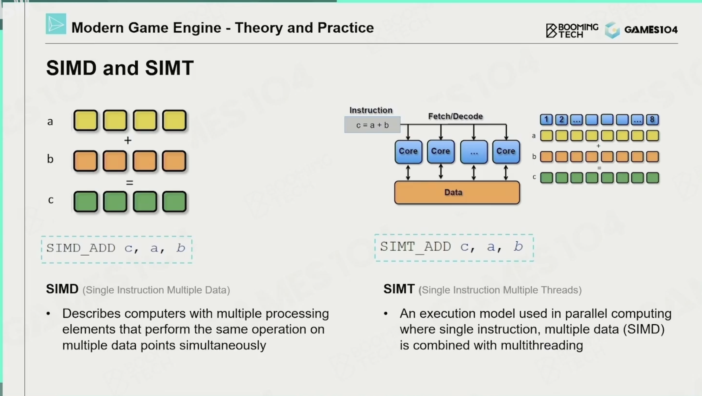
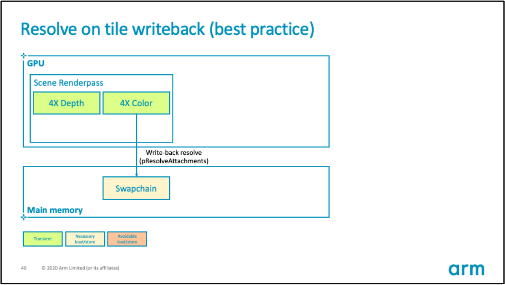

# GPU
# SIMD

SIMD (Single Instruction Multiple Data)
单指令多数据，例如多维向量 ，c++ 里 SSE 就是调用单指令多数据
SIMT(single Instruction Multiple Threads)
单指令多线程，可对 GPU 中单个 SM 中的多个 Core 同时处理同一指令，并且每个 Core 存取的数据可以是不同的。

GPC (图形处理集群) 计算、栅格化、阴影和纹理处理。40 系列安培架构里面还塞了 AI，还有光追
- SM (流式多处理器) 运行 CUDA 内核的 GPU 的一部分
- SFU（Special function units）执行特殊数学运算（sin、cos、log 等）
- Texture Units 纹理处理单元，它可以获取和过滤纹理。
- CUDA Core 允许不同处理器同时工作数据的并行处理器，也叫流处理器 Stream Processor
- Warp Schedulers：这个模块负责 warp 调度，一个 warp 由 32 个线程组成，warp 调度器的指令通过 Dispatch Units 送到 Core 执行。
- LD/ST（load/store）模块来加载和存储数据

GPU 被划分成多个 GPCs (Graphics Processing Cluster)，每个 GPC 拥有多个 SM（SMX、SMM）和一个光栅化引擎 (Raster Engine)，它们其中有很多的连接，最显著的是 Crossbar，它可以连接 GPCs 和其它功能性模块（例如 ROP 或其他子系统）。
程序员编写的 shader 是在 SM 上完成的。每个 SM 包含许多为线程执行数学运算的 Core（核心）。例如，一个线程可以是顶点或像素着色器调用。这些 Core 和其它单元由 Warp Scheduler 驱动，Warp Scheduler 管理一组 32 个线程作为 Warp（线程束）并将要执行的指令移交给 Dispatch Units。
# GPU 逻辑管线
1、程序通过图形 API (DX、GL、WEBGL) 发出 drawcall 指令，指令会被推送到驱动程序，驱动会检查指令的合法性，然后会把指令放到 GPU 可以读取的 Pushbuffer 中。
2、经过一段时间或者显式调用 flush 指令后，驱动程序把 Pushbuffer 的内容发送给 GPU，GPU 通过主机接口（Host Interface）接受这些命令，并通过前端（Front End）处理这些命令。
3、在图元分配器 (Primitive Distributor) 中开始工作分配，处理 indexbuffer 中的顶点产生三角形分成批次 (batches)，然后发送给多个 PGCs。这一步的理解就是提交上来 n 个三角形，分配给这几个 PGC 同时处理。
4、在 GPC 中，每个 SM 中的 Poly Morph Engine 负责通过三角形索引 (triangle indices) 取出三角形的数据 (vertex data)，即图中的 Vertex Fetch 模块。
5、在获取数据之后，在 SM 中以 32 个线程为一组的线程束 (Warp) 来调度，来开始处理顶点数据。Warp 是典型的单指令多线程（SIMT，SIMD 单指令多数据的升级）的实现，也就是 32 个线程同时执行的指令是一模一样的，只是线程数据不一样，这样的好处就是一个 warp 只需要一个套逻辑对指令进行解码和执行就可以了，芯片可以做的更小更快，之所以可以这么做是由于 GPU 需要处理的任务是天然并行的。
6、SM 的 warp 调度器会按照顺序分发指令给整个 warp，单个 warp 中的线程会锁步 (lock-step) 执行各自的指令，如果线程碰到不激活执行的情况也会被遮掩 (be masked out)。被遮掩的原因有很多，例如当前的指令是 if (true) 的分支，但是当前线程的数据的条件是 false，或者循环的次数不一样（比如 for 循环次数 n 不是常量，或被 break 提前终止了但是别的还在走），因此在 shader 中的分支会显著增加时间消耗，在一个 warp 中的分支除非 32 个线程都走到 if 或者 else 里面，否则相当于所有的分支都走了一遍，线程不能独立执行指令而是以 warp 为单位，而这些 warp 之间才是独立的。
7、warp 中的指令可以被一次完成，也可能经过多次调度，例如通常 SM 中的 LD/ST (加载存取) 单元数量明显少于基础数学操作单元。
8、由于某些指令比其他指令需要更长的时间才能完成，特别是内存加载，warp 调度器可能会简单地切换到另一个没有内存等待的 warp，这是 GPU 如何克服内存读取延迟的关键，只是简单地切换活动线程组。为了使这种切换非常快，调度器管理的所有 warp 在寄存器文件中都有自己的寄存器。这里就会有个矛盾产生，shader 需要越多的寄存器，就会给 warp 留下越少的空间，就会产生越少的 warp，这时候在碰到内存延迟的时候就会只是等待，而没有可以运行的 warp 可以切换。
9、一旦 warp 完成了 vertex-shader 的所有指令，运算结果会被 Viewport Transform 模块处理，三角形会被裁剪然后准备栅格化，GPU 会使用 L1 和 L2 缓存来进行 vertex-shader 和 pixel-shader 的数据通信。
10、接下来这些三角形将被分割，再分配给多个 GPC，三角形的范围决定着它将被分配到哪个光栅引擎 (raster engines)，每个 raster engines 覆盖了多个屏幕上的 tile，这等于把三角形的渲染分配到多个 tile 上面。也就是像素阶段就把按三角形划分变成了按显示的像素划分了。
11、SM 上的 Attribute Setup 保证了从 vertex-shader 来的数据经过插值后是 pixel-shade 是可读的。
12、GPC 上的光栅引擎 (raster engines) 在它接收到的三角形上工作，来负责这些这些三角形的像素信息的生成（同时会处理裁剪 Clipping、背面剔除和 Early-Z 剔除）。
13、32 个像素线程将被分成一组，或者说 8 个 2x2 的像素块，这是在像素着色器上面的最小工作单元，在这个像素线程内，如果没有被三角形覆盖就会被遮掩，SM 中的 warp 调度器会管理像素着色器的任务。
14、接下来的阶段就和 vertex-shader 中的逻辑步骤完全一样，但是变成了在像素着色器线程中执行。 由于不耗费任何性能可以获取一个像素内的值，导致锁步执行非常便利，所有的线程可以保证所有的指令可以在同一点。
15、最后一步，现在像素着色器已经完成了颜色的计算还有深度值的计算，在这个点上，我们必须考虑三角形的原始 api 顺序，然后才将数据移交给 ROP (render output unit，渲染输入单元)，一个 ROP 内部有很多 ROP 单元，在 ROP 单元中处理深度测试，和 framebuffer 的混合，深度和颜色的设置必须是原子操作，否则两个不同的三角形在同一个像素点就会有冲突和错误。
# GPu 渲染架构
# IMR (Immediate Mode Rendering) 立即渲染


IMR 模式的 GPU 的优势在于，顶点着色器和其它几何体相关着色器的输出可以保留在 GPU 内的芯片上。这些着色器的输出可以存储在 FIFO 缓冲区，直到管道中的下一阶段准备使用数据，GPU 可以使用很少的外部内存带宽存储和检索中间几何结果。
IMR 模式的 GPU 的劣势在于，像素着色在屏幕上跳跃，因为三角形按绘制顺序处理，数据流中的任何三角形都可能覆盖屏幕的任何部分（下图）。意味着活动工作集是整个 framebuffer 的大小。例如，考虑一个分辨率为 1440p 的设备，使用 32 位每像素 (BPP) 的颜色，32 位每像素的填充深度 / 模板，将提供 30MB 的总工作集，若全部存储在 on chip 上，数据量过大，因此必须存储在 DRAM 的 off chip 之外。
# TBR（Tile Based Rendering）

TBR 架构的 GPU 会把整个逻辑渲染管线打断成两个阶段：
第一阶段和 IMR 类似，它负责顶点处理的工作，不同的是在每个三角形执行完他们的 VS 之后，还会执行一个称之为 Binning Pass[18] 的阶段，这个阶段把 framebuffer 切分成若干个小块（Tiles/Bins），根据每个三角形在 framebuffer 上的空间位置，把它的引用写到受它影响的那些 Tiles 里面，同时由 VS 计算出来的用于光栅化和属性插值的数据，则写入另一个数组（我们可以认为图中 Primitive List 就是我们说的一个固定长度数组，其长度依赖于 framebuffer 划分出的 tile 的数量，数组的每个元素可以认为是一个 linked list，存的是和当前 tile 相交的所有三角形的指针，而这个指针指向的数据，就是图中的 Vertex Data，里面有 VS 算出的 pos 和 varying 变量等数据）。在 Bining Pass 阶段，Primitive List 和 Vertex Data 的数据会被写回到 System Memory 里
TBR 的管线会等待同一个 framebuffer 上所有的三角形的第一阶段都完成后，才会进入到第二阶段，这就表示，你应该尽可能的少切换 framebuffer，让同一个 framebuffer 的所有三角形全部绘制完毕再去切换
第二阶段负责像素着色，这一阶段将会以 Tile 为单位去执行（而非整个 framebuffer） ，每次 Raster 会从 Primitive List 里面取出一个 tile 的三角形列表，然后根据列表对当前 tile 的所有三角形进行光栅化以及顶点属性的插值。后面的阶段 TBR 和 IMR 基本是一致的，唯一区别在于，由于 Tile 是比较小的，因此每个 Tile 的 color buffer/depth buffer 是存储在一个 on chip memory 上，所以整个着色包括 z test 的过程，都是发生在 on chip memory 上，直到整个 tile 都处理完毕后，最终结果才会被写回 System Memory。
1 | |
** 分块（Binning Pass）** 过程大致如下：

- 设定每个 Bin（也被称为 Tile）的固定大小（2 的 N 次方，长宽通常相同，具体尺寸因 GPU 厂商而异，如 16x16、32x32、64x64），根据 Frame Buffer 尺寸设置可见数据流。
- 转换图元坐标。注意此阶段处理的是索引和顶点数据，某些 GPU（如 Adreno）会用特殊的简化过的 shader（而非完整的 Vertex Shader）来处理坐标，以减少带宽和能耗。此阶段通常只有顶点的位置有效，其它顶点数据（纹理坐标、法线、切线、顶点颜色）都会被忽略。
- 遍历所有图元，标记所有图元覆盖到的块，将可见性数据写入到被覆盖的块数据流中。
- 将可见性数据流写回系统显存中。
** 渲染（Rendering Pass）** 过程大致如下：
- 初始化渲染 Pass。
- 遍历所有分块，对每个分块执行以下操作：
- 利用分块的可见性数据流，执行绘制调用。
- 光栅化图元。
- 像素操作（像素着色器、深度模板测试、Alpha 测试、混合）。
- 写入像素数据（颜色、深度、模板等等）到分块芯片上的缓冲区（又被称为 On-Chip Memory、GMEM、Tiled Memory）。
** 解析（Resolve Pass）** 阶段过程如下：
如果开启了 MSAA，在 GMEM 上的解析颜色、深度等数据（求平均值）。可以减少后续步骤 GMEM 传输到系统显存的数据总量。

将分块上的所有像素数据（颜色、深度、模板等）写入到系统显存中。
如果不是 Frame Buffer 的最后一个分块，继续执行下一个分块。
如果是 Frame Buffer 的最后一个分块，交互缓冲区，执行下一帧的 Binning Pass。
# TBDR（Tile Based Deferred Rendering）延迟渲染
- 使用的是延迟渲染（Deferred Rendering）
- HSR（Hidden Surface Removal，隐藏面消除）等进一步减少了不需要渲染的过程